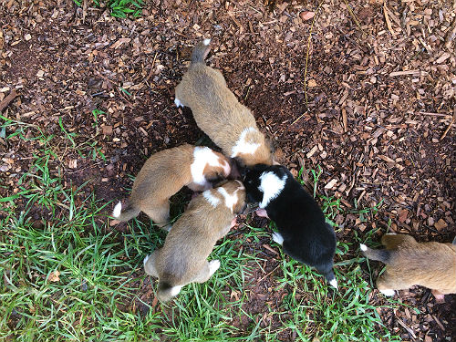
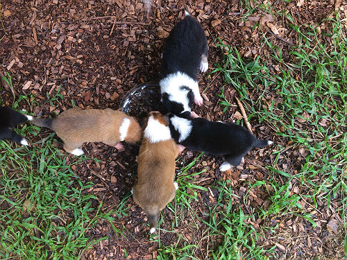
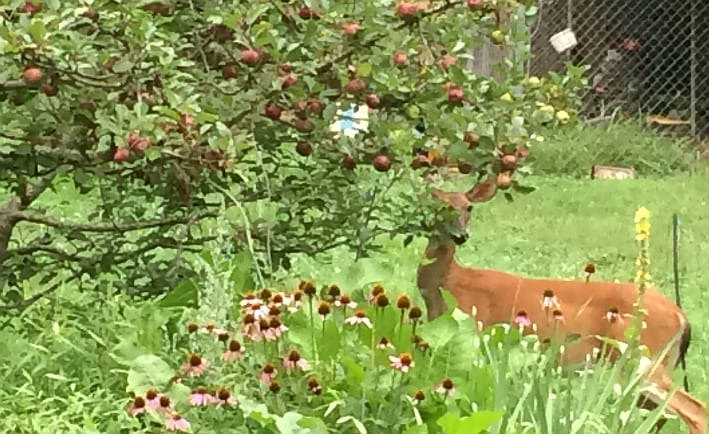
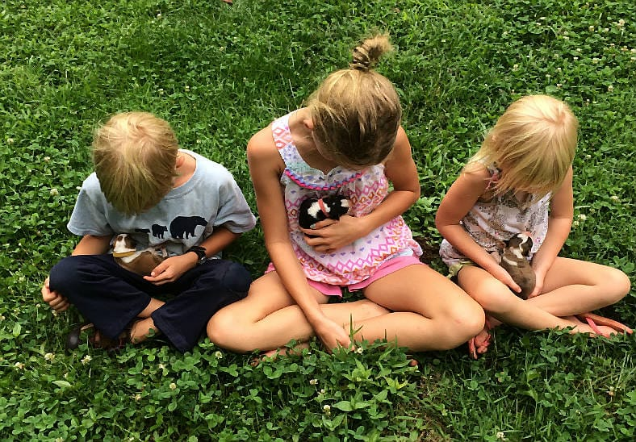

Montana whelped 8 beautiful, healthy puppies in the wee hours of July 16th! We are very pleased to have 6 females and 2 males. There were no complications with her first whelping and she is an attentive mother.
Our puppies will be handled from birth with our family and friends to start their socialization, and to help us evaluate them. All puppies are introduced to basic training at 4 weeks old, using positive reinforcement. From six to eight weeks of age they are crate trained, keenly observed for temperament, and evaluated before sending them to their new homes.
| Puppy Name | Sex | Collar Color |
|---|---|---|
| Maria | female | Dark purple |
| Liesl | female | Teal |
| Louisa | female | Light purple |
| Brigitta | female | Orange* |
| Marta | female | Pink |
| Gretl | female | Yellow |
| Friedrich | Male | Dark blue |
| Kurt | Male | Green |
 In May of 2018, Montana was bred to Glen Craigean's Dunrovin Cormac or Wallace as he is more affectionately known. Here is more information about Wallace , his genetics and photos.
In May of 2018, Montana was bred to Glen Craigean's Dunrovin Cormac or Wallace as he is more affectionately known. Here is more information about Wallace , his genetics and photos.
We are excited for the pairing of Montana and Wallace. This new line is unrelated to many OTSC’s currently being bred. This match brings new genes into the OTSC gene pool which is necessary to help keep up the preservation of these fabulous dogs. Both of these dogs are working farm dogs who either live with or have been exposed frequently to various types of livestock and farm animals. They are both excellent at pest control. Wallace’s favorite past time is catching squirrels and rats. Montana is savvy enough to cut woodchucks off from their burrow and chase them into the nearest tree. Both dog's are excellent guardians to their young human family members.
It was our 11 year-olds goal to have all the puppies sitting by 8 weeks of age. She actually managed to do it!
More puppy play time.
Here is Montana getting some cool deck time after a good rain. Part of my reason for showing Montana again is reminding you that I would expect some of these sable and whites to be shaded sables like Montana. Also, we have red clay mud/soil here where I live so Montana's white is now a pink tinged cream. You may have noticed this in the close up photos of the puppies too. Their white will be bright again after a good bath. There are a few color genetics threads going on in the facebook groups about Montana (shaded sable and white) and Ciara (tri-colored) mating with Wallace (a milk sable) and what puppies will be produced. Some are surprised Montana had some tri's. There is a possibility that the tri-colored puppies will turn into saddlebacks, meaning their black backs will be in a saddle pattern along their backs. See this post for a puppy who appeared tri and turned into a handsome saddleback.
The puppies are getting sooo cute and playing more and more all the time. They wrestle, chew on each other and play a bit of chase. My children have set up toys and obstacles for them to play on from things around our property. It's kind of fun to repurpose things like this. Some especially like balls, and rope while others prefer each other it seems. This video was taken at the end of a play session and they are just about all worn out.
Montana is making the puppies wait longer between feedings. She also now prefers to nurse standing up. It is pretty amusing to watch the pups feeding this way. There are 8 puppies, but only 6 teats and the dogs are balancing on their back legs to get at them. They are constantly toppling over as they jockey for position. The puppies bellies are all bulging. Montana is giving her brood everything she has. Even with five feedings a day, Montana has lost a lot of weight raising her pups.
 The puppies have started on some semi-solid food in the last few days. Some of the new foods they are trying are cottage cheese, yogurt, and broth or milk soaked kibble. They LOVE it and eat it right up. Of course, they are still nursing and getting snuggles from mama Montana as well.
Now that the pups are walking, we put them outside any time it's not raining. There is lots to explore; new textures, sights and smells to investigate. There is also plenty of room for rough housing or to find a quite corner away from the din for a nap.
I'm not sure there could be a better gift for a 5 year-old than to be able to play and cuddle with puppies everyday. It will be hard for her to say goodbye when the time comes for these sweeties to go to their forever home.
The puppies have just opened their eyes and all have doubled in weight. They are attempting sitting up and walking about. (Time to heighten the sides on the whelping box.) Their legs are still a bit shaky but that doesn't stop them from trying to wrestle with one another. Little canines are poking through their gums too! That means the pups will be ready to try some new foods soon. Here is an up close look at each puppy.
Hello to all mamas out there. Do you remember those early days with your first born? And do you remember the moments you could sip some tea with a fellow mama who knew what you were going through? Well, I'll personify here and say Montana got some mama time with one of our hens who is raising a few little ones of her own. I'm not sure if the hen understood Montana's perspective of nursing 8 puppies with bottomless bellies, but they got along well. Though they've been fenced more lately than they are used to, both agreed on it's value for keeping their wee ones safe. I imagine both of them dreaming of the days when they can roam "wild" and free again.
In the last few days, while Montana is currently off duty from her patrols and being a dutiful mother, we have seen deer, rabbits and squirrels already appearing to know the coast is clear around our place. We lost all but one nectarine off our tree a few nights ago. And this morning I came out to see a deer starting in on the apples. We are very pleased Montana is so focused on being a great mother. At the same time, we’d like our varmint control back!
Kayla Franklin, the owner of Wallace (the sire of these puppies), and her children came to visit. Since we both homeschool our children, they have all witnessed the courtship, breeding and now fruition of that. Today they get to share in the joy of seeing and cuddling these sweet pups.
The puppies are all gaining weight and scootching around a bit more. I'm amazed to see some personalities already developing and wonder if we will continue to see these same characteristics throughout the coming weeks.
 Montana is proving to be an attentive and nurturing mother to these 8 pups. She is patient and kind with them while nudging them into place next to her and cleaning their bums. She takes breaks for herself whenever my children and I come for a "puppy visit". She will stretch her legs or just go sit in the sun for a bit. She's getting plenty of food and water to keep up the milk supply. She went on her first real walk today leaving the puppies under the care of my daughter but was eager to get back to them once she heard some of them calling for her. I didn't doubt she would be a good mother considering how gentle she is with all the children that come to our house to play but I suppose you never know for sure until you see it.
Montana is proving to be an attentive and nurturing mother to these 8 pups. She is patient and kind with them while nudging them into place next to her and cleaning their bums. She takes breaks for herself whenever my children and I come for a "puppy visit". She will stretch her legs or just go sit in the sun for a bit. She's getting plenty of food and water to keep up the milk supply. She went on her first real walk today leaving the puppies under the care of my daughter but was eager to get back to them once she heard some of them calling for her. I didn't doubt she would be a good mother considering how gentle she is with all the children that come to our house to play but I suppose you never know for sure until you see it.